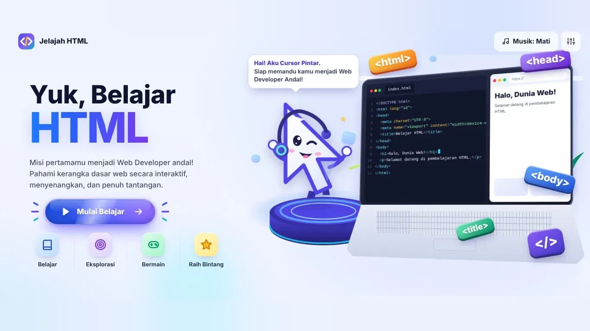

01 · MEDIA INTERAKTIF
Media Interaktif
Modul digital berisi video, animasi, drag & drop, dan kuis langsung yang membuat siswa aktif terlibat di setiap materi.
- Video & animasi materi
- Kuis dengan umpan balik instan
- Progres belajar tiap siswa